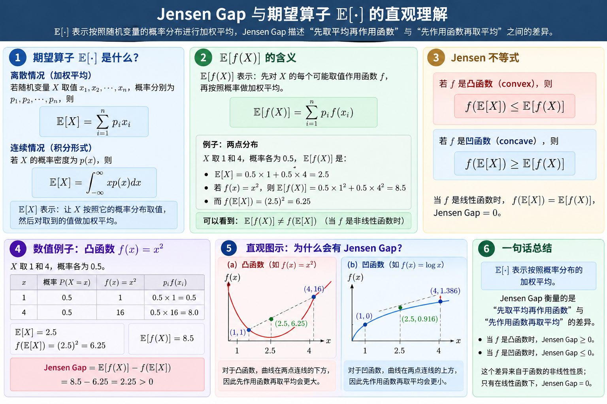
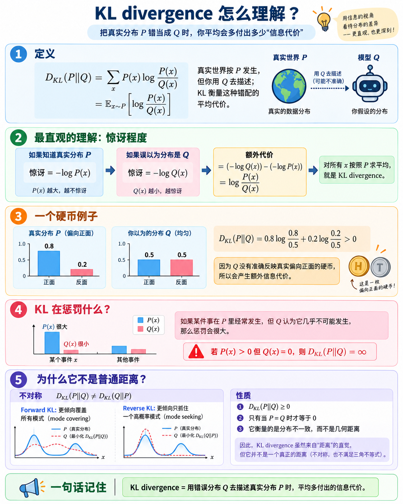
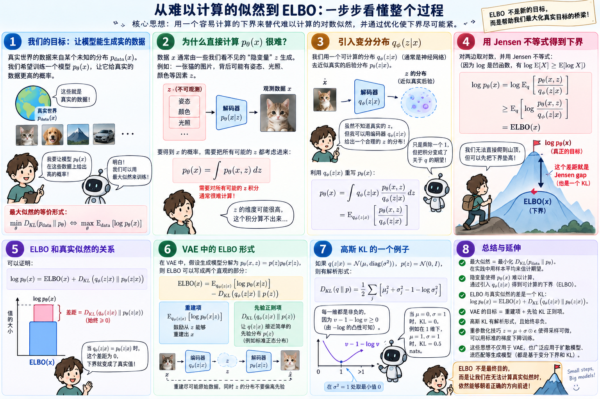

The mathematics beneath
generative models.
Three ideas that explain how we compare probability distributions—and why a tractable training objective can stand in for an intractable likelihood.
Terminology: “Jensen non-equality” is usually called Jensen’s inequality. Here, “KL curl” is interpreted as Kullback–Leibler (KL) divergence; curl is a different concept from vector calculus. All logarithms below are natural logarithms, so information is measured in nats.
Expectation is a weighted average.
A generative model learns a probability distribution over data: images, sounds, or robot actions. Training asks the model to assign suitable probabilities; generation draws new samples from its learned distribution.
| Symbol | Meaning | Example |
|---|---|---|
| x, z | Observed data and an unobserved (latent) variable | An image and a hidden representation |
| p(x), q(x) | Probability masses, or densities for continuous x | Two different models of the same outcome |
| θ, φ | Learnable parameters | Neural network weights |
| Ep[f(X)] | Average of f(X) when X follows p | Σx p(x)f(x) |
| p(x | z) | Conditional distribution of x given z | A decoder’s distribution over images |
If X equals 1 with probability ¼ and 3 with probability ¾, then E[X] = 2.5, while E[X²] = 7. Squaring the average gives only 6.25. Applying a function and averaging do not generally commute.
For continuous variables, replace sums by integrals: Ep[f(X)] = ∫p(x)f(x) dx. A density may exceed 1; its integral is 1. To follow the derivative tests, you only need the ideas of slope (f′) and how slope changes (f″).
Convex functions sit below their chords.
Choose two inputs a and b. A convex function never rises above the straight line joining their function values. The domain must be convex too: the entire segment between any two allowed inputs must remain allowed.
The left side means “mix the inputs, then evaluate.” The right side means “evaluate the endpoints, then mix the outputs.” Here t is the weight on b. A concave function reverses the inequality.
Explore a convex bowl: f(x) = x²
Endpoints are a = −1 and b = 3. Move t to compare the curve with its chord at the same input.
● Curve: f(E[X]) ● Chord: E[f(X)]
Characteristics you should recognize
| Property | Meaning / condition |
|---|---|
| Derivative test | On an open interval, a twice differentiable f is convex iff f″(x) ≥ 0 everywhere. Examples: x², eˣ, and −log x (x > 0). log x is concave. |
| Tangent bound | For differentiable convex f: f(y) ≥ f(x) + f′(x)(y − x). The tangent is a global lower bound. |
| Several variables | For twice differentiable f on an open convex domain, its Hessian must be positive semidefinite: vᵀ∇²f(x)v ≥ 0 for every v. |
| Strict convexity | The chord inequality is strict for a ≠ b and 0 < t < 1. If a minimum exists on a convex feasible set, it is unique. Strict convexity alone does not ensure existence. |
| Optimization | Every local minimum of a convex function on a convex feasible set is global. Affine functions are both convex and concave; |x| is convex despite its corner at zero. |
Jensen turns curvature into a bound.

Read the two expressions in order
E[f(X)]: 先作用函数，再加权平均。 Apply f to each possible value, then take the probability-weighted average.
f(E[X]): 先加权平均，再作用函数。 Average the possible values first, then apply f once.
In the image, X is 1 or 4 with equal probability and f(x) = x². The first route gives (1² + 4²)/2 = 8.5. The second gives ((1 + 4)/2)² = 6.25. Their difference is 2.25.
With this sign convention, the gap is nonnegative for convex f and nonpositive for concave f, assuming the expectations are finite.
The two-point definition of convexity extends to any probability-weighted average. For convex f, assuming X lies in its convex domain and the relevant expectations are finite:
f(Σᵢ wᵢxᵢ) ≤ Σᵢ wᵢf(xᵢ), wᵢ ≥ 0, Σᵢ wᵢ = 1
For concave f, reverse the sign. In particular, for positive Y:
This logarithm version is central to generative modeling: the log of an average can be hard to compute, but an average of logs can provide a usable lower bound.
A numerical check
Let X be 1 or 3 with equal probability.
E[X] = 2
(E[X])² = 4
E[X²] = (1 + 9)/2 = 5
The Jensen gap is 5 − 4 = 1. For f(x) = x², this gap is exactly Var(X).
When is it equality?
If X is constant with probability 1, equality holds. It also holds when f is affine over the range being mixed.
For a strictly convex f and finite expectations, equality holds only when X is constant almost surely. A nonzero spread creates a strict gap.
Why does the inequality hold?
For differentiable convex f, set μ = E[X]. The tangent bound gives f(X) ≥ f(μ) + f′(μ)(X − μ). Take expectations. The last term vanishes because E[X − μ] = 0, leaving E[f(X)] ≥ f(E[X]). The general result also covers nondifferentiable convex functions.
How wrong is your probability model?

Yes—think of KL as a penalty for probability mismatch.
KL 越大，说明用 Q 描述 P 时，平均多付出的信息代价越大。 If p describes what actually happens and q is your model, DKL(p ‖ q) penalizes the model for assigning unsuitable probabilities. A perfect match has penalty zero.
For example, if heads actually occurs 80% of the time but your model gives it only a 1% chance, the model repeatedly treats a common event as a huge surprise. This creates a large penalty. If the model gives that possible event probability zero, the KL penalty is infinite.
There is one subtlety: the total KL is nonnegative, but an individual outcome’s contribution can be negative. The penalty interpretation applies to the average over the whole distribution, not to every term separately. KL also depends on direction: the first distribution determines the averaging weights.
In machine learning, KL can serve as a loss or be added as a regularization penalty. For example, a VAE penalizes its latent distribution for departing from a chosen prior. In that case the two distributions are an approximate posterior and a prior; they do not have to mean “reality” and “model.”
Imagine a coin that lands heads 80% of the time. Your model assumes it is a fair coin: 50% heads. KL divergence measures the average extra surprise from using your model instead of the actual probabilities. Here we call the actual distribution p and your model q. In other applications, p and q can be any two distributions you want to compare.
| Outcome x | Actual coin p(x) | Your model q(x) |
|---|---|---|
| Heads | 0.8 = 80% | 0.5 = 50% |
| Tails | 0.2 = 20% | 0.5 = 50% |
| Total | 1 = 100% | 1 = 100% |
What is the “function” here?
p(x) and q(x) return a probability for one outcome x. For example, p(heads) = 0.8. DKL(p ‖ q) takes both complete distributions and returns one number describing their mismatch. The symbol ‖ separates its two arguments; it does not mean division.
Step 1 · Give “surprise” a number
A likely outcome is unsurprising. An outcome your model considers very unlikely is surprising. We express this with the negative logarithm:
Probability 1 gives surprise 0. Probability 0.5 gives about 0.693. Probability 0.01 gives about 4.605. Lower probability means greater surprise. Natural logarithms give the unit nats; you can focus on the comparison before worrying about the unit.
Step 2 · Compare your model’s surprise with the actual surprise
= [−log q(x)] − [−log p(x)]
= log[p(x) / q(x)]
For heads, log(0.8/0.5) ≈ +0.4700: your model is more surprised than it should be. For tails, log(0.2/0.5) ≈ −0.9163: your model is less surprised than it should be.
Step 3 · Average using how often outcomes actually happen
Heads happens 80% of the time, so its extra surprise gets weight 0.8. Tails gets weight 0.2. This weighted average is KL:
= 0.8 × 0.4700 + 0.2 × (−0.9163)
≈ 0.1927 nats per toss
Read Σ as “add over all possible outcomes.” Read Ep as “average using probabilities from p.” So the same formula can be written:
Try it: change your model of the coin
Keep the actual heads probability at 0.80. Move your model from 0.50 toward 0.80: KL decreases to zero. Then move it toward 0: heads becomes increasingly surprising to your model.
■ Actual coin p ■ Your model q
The calculation below the chart updates with the sliders. A zero actual probability contributes 0; a positive actual probability paired with zero model probability contributes ∞.
Why does direction matter?
DKL(p ‖ q) uses p to decide how often each outcome counts. DKL(q ‖ p) uses q instead. For our original coin, the first weights heads by 0.8, but the second weights heads by 0.5. They are answering different averaging questions, so their answers can differ.
Which convex function connects this to Jensen?
The function is f(u) = −log u, for u > 0. It takes a positive number, whereas KL takes two distributions. Set u = q(x)/p(x), then average f(u) using p:
DKL(p ‖ q) = Ep[f(q(X)/p(X))]
Because −log u is convex, Jensen lets us compare this average with the function of the average. When p and q are positive on the same finite set of outcomes, Ep[q(X)/p(X)] = Σxq(x) = 1. Therefore KL ≥ −log 1 = 0. The proof below also handles different supports.
What does this mean for a generative model?
Replace coin outcomes with possible images or robot actions. Let p represent the data distribution and q the model distribution. Reducing DKL(p ‖ q) encourages the model to assign suitable probability to outcomes found in the data. The same probability comparison now applies to a much larger space.
Optional: continuous variables and zero probabilities
For continuous distributions, use ∫p(x) log[p(x)/q(x)] dx. In the discrete formula, a term with p(x) = 0 contributes 0. If p(x) > 0 but q(x) = 0, KL is infinite: the model declares a possible event impossible. More generally, finite KL requires p to be absolutely continuous with respect to q (q cannot assign zero probability to a set with positive p probability), although that condition alone does not guarantee a finite integral.
Characteristics and common traps
- Nonnegative: DKL(p ‖ q) ≥ 0, with equality iff the distributions agree (almost everywhere for densities).
- Asymmetric: DKL(p ‖ q) generally differs from DKL(q ‖ p). It is not a metric and does not obey a triangle inequality in general.
- Not bounded above: it may be arbitrarily large or infinite.
- Individual terms can be negative: if q(x) > p(x), that term is negative; the total remains nonnegative.
- Jointly convex in distributions: mixing both arguments with the same weights cannot exceed the weighted average of their KL values. This gives no general convexity guarantee in neural network parameters.
A worked calculation
For p = (0.8, 0.2) and q = (0.5, 0.5):
DKL(q ‖ p) = 0.5 log 0.625 + 0.5 log 2.5 ≈ 0.2231 nats
Proof: Jensen explains why KL is nonnegative
First assume p and q are positive on the same finite support. Because −log is convex:
≥ −log Ep[q/p] = −log Σxq(x) = 0.
If q also has mass outside the support S of p, the sum becomes Σx∈Sq(x) ≤ 1, so the lower bound is still nonnegative. If q is zero on an outcome with positive p, KL is infinite. Strict convexity of −log, together with normalization, gives equality exactly when p = q.
Connection to cross-entropy
H(p, q) = −Σ p log q (cross-entropy)
DKL(p ‖ q) = H(p, q) − H(p)
For a fixed discrete target p with finite quantities, minimizing cross-entropy over q is equivalent to minimizing KL: H(p) does not change. In coding terms, KL describes the ideal expected extra code length from using q instead of p; use base-2 logs to measure it in bits.
From probabilities to a training objective.
1. Maximum likelihood fits the data distribution
A model pθ(x) should give likely data high probability. With a fixed population distribution pdata, when the quantities are well-defined:
The first term is independent of θ. Thus minimizing this KL is equivalent to maximizing expected log likelihood. In practice, estimate the expectation with the sample average (1/N) Σᵢ log pθ(xᵢ). For continuous data, this sample objective is an estimate of the population objective; do not literally take KL between a set of point masses and a continuous model density.
2. Hidden variables make likelihood difficult
Let z represent hidden variation. Define a joint model pθ(x,z) = p(z)pθ(x|z). To compute pθ(x), we must sum or integrate over every possible z. That integral is often intractable.
Use Jensen to build a tractable lower bound
ELBO = Evidence Lower Bound. It is a lower bound on the log evidence, log pθ(x). We maximize this computable objective when the exact likelihood is difficult to evaluate.

Reading notes: in panel 3, qφ(z|x) is the encoder (编码器), despite the decoder label in the drawing. In panel 8, the VAE loss is reconstruction negative log likelihood plus prior KL; the ELBO itself is reconstruction log likelihood minus prior KL. The connection to flow matching depends on the formulation; not every flow-matching objective is an ELBO.
Introduce qφ(z|x), a tractable approximation to the model posterior pθ(z|x). For a fixed x, assume q is positive wherever pθ(x,z) is positive, so the following importance-ratio identity is valid; also assume the displayed expectations are finite.
= log ∫ qφ(z|x) [pθ(x,z) / qφ(z|x)] dz
= log Eq[pθ(x,z) / qφ(z|x)]
≥ Eq[log pθ(x,z) − log qφ(z|x)]
= ELBO(x).
The inequality is exactly Jensen for the concave logarithm. ELBO means evidence lower bound; “evidence” here is the marginal likelihood pθ(x).
3. KL tells us how loose the bound is
The gap is nonnegative and vanishes when q equals the true posterior. This identity follows by substituting pθ(z|x) = pθ(x,z)/pθ(x) into KL. For fixed θ, maximizing the ELBO over φ tightens the approximation.
4. The VAE objective has two interpretable terms
− DKL(qφ(z|x) ‖ p(z))
The first term rewards explaining x from its latent representation. The second penalizes departure from the prior. Training usually minimizes the negative ELBO: reconstruction negative log likelihood plus prior KL. The reconstruction term is a squared-error loss only under suitable Gaussian decoder assumptions; it is not always mean squared error.
Gaussian KL you will see in code
For q(z|x) = N(μ, diag(σ²)) and p(z) = N(0,I), with every σⱼ > 0:
If μ = 0 and every σ = 1, KL is zero. In one dimension, μ = 1 and σ = 1 gives KL = 0.5 nats. Convexity of −log implies v − 1 − log v ≥ 0 for v > 0, which explains why each variance contribution is nonnegative.
Reparameterization: separate noise from learned parameters
Draw standard Gaussian noise ε, then scale it by σ and shift it by μ. The symbol ⊙ means elementwise multiplication. Holding the sampled noise fixed, gradients can pass through z to μ and σ. This lets us estimate gradients of the reconstruction expectation during training.
This is a differentiable way to construct the sample; it does not make the training objective convex. The prior KL regularizes latent distributions but does not by itself guarantee that overfitting disappears.
Where this foundation leads
VAEs are the most direct application of the derivation above. Diffusion models also use variational bounds with KL terms between distributions along a noise process; common noise-prediction losses require further Gaussian algebra and weighting choices. These three concepts are foundations, not the full derivation of a diffusion or flow-matching algorithm.
When fitting a restricted family q to a target p, minimizing DKL(p ‖ q) strongly penalizes missing regions where p has mass. Minimizing DKL(q ‖ p) strongly penalizes putting q mass where p is tiny. This helps explain the often-used “mode covering” and “mode seeking” descriptions, but they are tendencies under model constraints, not universal guarantees.
Try it before opening the answers.
1. Is f(x) = −log x convex? On which domain?
Yes, on x > 0: f″(x) = 1/x² > 0. It is strictly convex. log x is strictly concave on the same domain.
2. X is 0 or 4, equally likely. Find the Jensen gap for x².
E[X] = 2, E[X²] = 8, and (E[X])² = 4. The gap is 4, equal to Var(X).
3. If p = (1, 0) and q = (½, ½), compute KL in both directions.
DKL(p ‖ q) = log 2 ≈ 0.6931 nats. DKL(q ‖ p) = ∞, because q gives positive weight to an outcome that p declares impossible.
4. An ELBO is −12 and the posterior KL gap is 2. What is log p(x)?
−10, because log p(x) = ELBO + posterior KL. A lower bound can be negative; its position relative to log p(x) is what matters.
5. Why doesn’t convex KL imply easy neural network optimization?
KL is convex in its probability-distribution arguments. The nonlinear map from network weights θ to pθ need not preserve convexity. Training in θ is generally nonconvex.
6. Does a better ELBO always mean a better likelihood when both θ and φ change?
No. The ELBO can improve because the posterior approximation becomes tighter, even if likelihood decreases. The identity log p(x) = ELBO + gap shows why comparing bounds alone does not order likelihoods across different models.
Your learning checkpoint
You are ready to move on when you can draw the convex chord inequality, choose the correct Jensen direction for log, compute a two-outcome KL, explain its asymmetry, and derive the ELBO without confusing prior KL with posterior KL.
Continue with conditional probability and Bayes’ rule → multivariate Gaussians → Monte Carlo estimation → reparameterization → a small VAE → diffusion objectives.
Next lesson: Variational autoencoders — interactive sampling, real toy-model training, and generation.